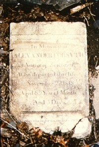

by
Stefan Bielinski
Alexander Forsyth/Forsight was born in Scotland about 1749. His name first appears in the community record when he married Mary/Molly Frasier at the Albany Dutch church in December 1776. Scottish people, their younger children were baptized in the Albany Presbyterian Church.
A carpenter by trade, in 1780 he was held back from military service at the request of Continental Quartermaster Morgan Lewis.
By the end of the war, Alexander Forsyth had become a fixture in the second ward where he practiced his trade, raised a family, and served as a fireman. His Chapel Street home was in the heart of an enclave of recently arrived Scottish tradesmen. In 1789, he purchased an additional lot farther up the hill.
Alexander Forsyth lost his wife in 1804. A widower with several young children, he lived at 65 Chapel Street until his death in 1818. His sons became businessmen in nineteenth century Albany. He was buried in the United Presbyterian Church cemetery plot. He was sixty-nine years old and had lived in Albany for more than forty years. His tombstone was found in 1988 in the backyard of a home near Washington Park and on the road to Albany Rural Cemetery. It became an important historical resource as it revealed that Alexander Forsyth had been born in Scotland!

notes
 Sources: The life of Alexander Forsyth/Forsight is CAP biography
number 5904. This profile is derived chiefly from community-based
resources.
Sources: The life of Alexander Forsyth/Forsight is CAP biography
number 5904. This profile is derived chiefly from community-based
resources.
first posted: 7/30/02